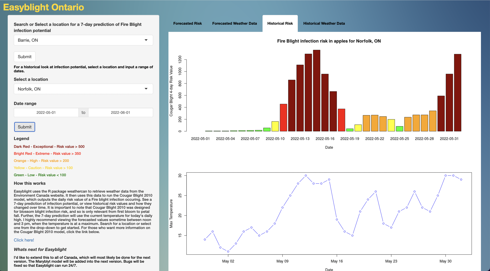
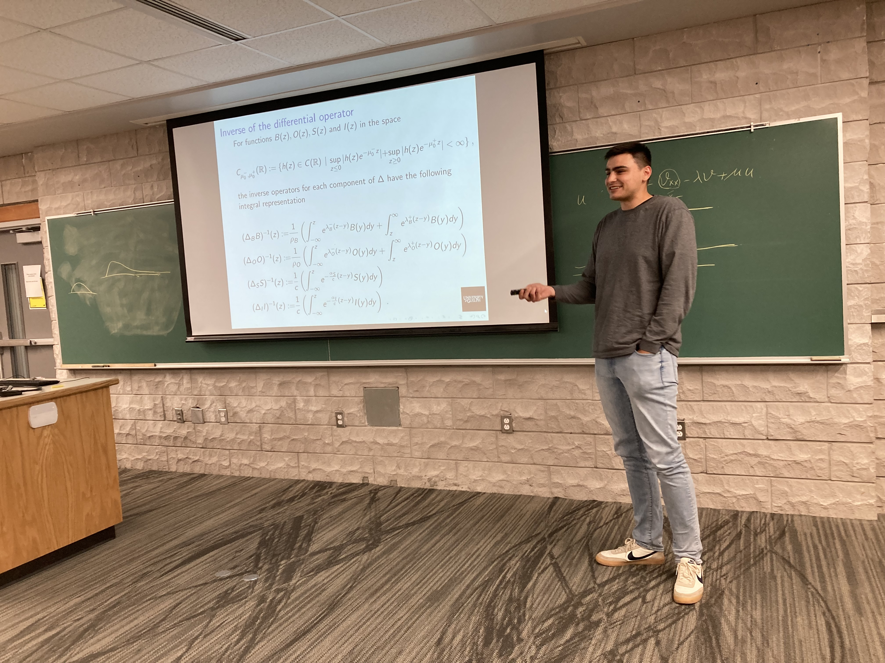
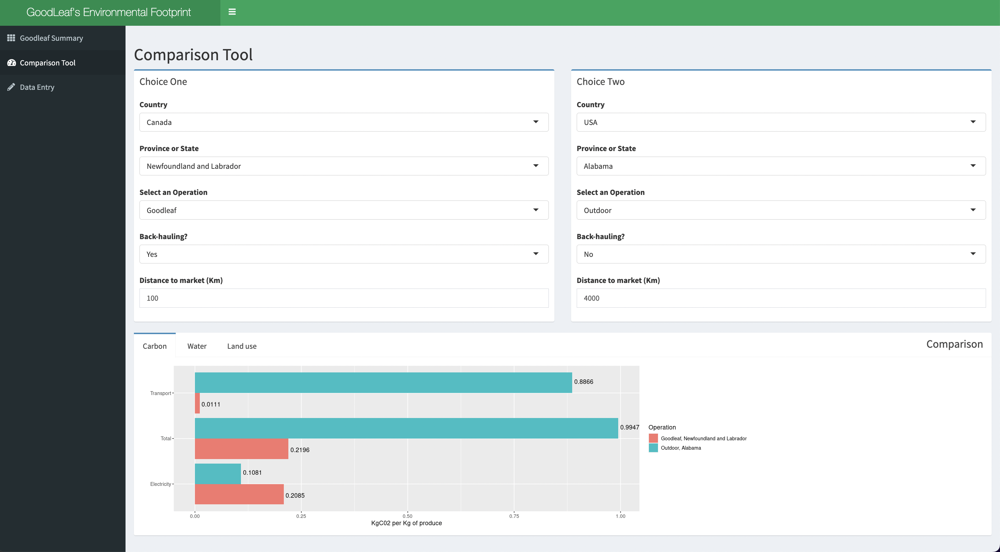

Welcome to my website. I'm Michael, a graduate student in applied math at The University of Guelph. I like to use tools such as R, Scala and Spark.
About Me
Favourite books : Prisoner of Azkaban, The Half Blood Prince, The Lost Symbol, Small Gods and Anxious People.
Favourite movies : Good Will Hunting, The Lord of the Rings, Harry Potter, Star Wars and Howl's Moving Castle.
What I'm learning : Right now I am learning how to create web applications with Scala and Scala.js.
I used these tools to build this website. I am also learning how to work with big data using Scala and Spark.
I plan to learn more about the Akka toolkit, Slick, AWS and Kafka in future projects.
That's me.
My Work History
Tutor at Oxford Learning Center. May 2022 to Present.
Tutoring students in physics, math and english.
A good opportunity to work on my communication skills and ability to teach.
Teaching Assistant at The University of Guelph. September 2020 to May 2022.
Delivering material for math courses such as calculus and numerical methods.
Working with students during office hours to ensure they feel confident with course material.
Consultant for The Ontario Apple Growers. September 2020 to January 2021.
Analyzing pricing data to generate reports with R.
Automating the reporting process with R and R-Markdown.
Research Assistant for the Ontario Ministry of Agriculture, Foods and Rural Affairs. Summer of 2019 and May 2020 to January 2021.
Developed a Python script to automate what was previously a 4 hour job,
but now takes about 30 minutes on my personal laptop through the use of the Selenium,
BeautifulSoup and Pandas libraries.
Developed multiple Shiny web apps through R to display
weather data and disease forecasting predictions relevant to Ontario growers.
Assisted in research through data collection, data cleaning data analysis and data visualization.
Wrote an article comparing two of the main forecasting models for Fireblight.
This was published in a ministry newsletter.
Performed data analysis on disease and pest data collected at the Simcoe research station.
Generated reports for growers, primarily using R.
See some of my work below!

My EasyBlight app, made with R and R Shiny.
Education
Master of Science - Applied Math. The University of Guelph.
Courses taken: Scientific Computing (with C), Functional Analysis, Optimization,
Partial Differential Equations, and Agri-Food Innovation. Average 87.2%.
Thesis: A spatial model to describe an outbreak of fire blight during bloom. I formulated a
model for fire blight spread during bloom using differential equations. I studied them analytically with calculus and fixed point theorems
and then ran statistical simulation experiments to draw conclusions about the behaviour of the disease.
Canadian Mathematical Society Conference. I was invited to be a speaker at the 2022 CMS summer conference
in St. John's, Newfoundland. It was a twenty-minute talk delivered to an audience of experts and colleges. The title of my
presentation was "Travelling wave solutions in a model of fire blight spread".

Me, presenting at the 2022 CMS Summer Conference.
HQP Scholarship The Highly Qualified Personnel Scholarship Program funds graduate students whose research
aligns with the Ministry of Agriculture's priorities. One condition of the scholarship is that I enroll and complete the Agri-Food and Innovation course.
In this course, I was paired with an Ontario-based Agri-Food company and tasked with solving a problem they were faced with.
We would meet weekly with a representative from the company so that we could give updates and receive feedback. My group and I produced
multiple deliverables, including a summary report and an informative video. My own personal contribution was an app made through Shiny and R.
See it here, as well as the picture below.

The app I made for my company partner.
Bachelor of Science - Mathematics and Statistics. McMaster University.
Data Management Specialist on The McMaster Interdisciplinary Satellite Team - NEUDOSE Project, Science Team.
Online Certificates.
Advanced Google Analytics - Google Analytics Academy.
Data Visualization with Tableau - Coursera.
Deeplearning.AI TensorFlow Developer - Coursera.
Databases and SQL for Data Science, IBM cognitive class- Coursera.